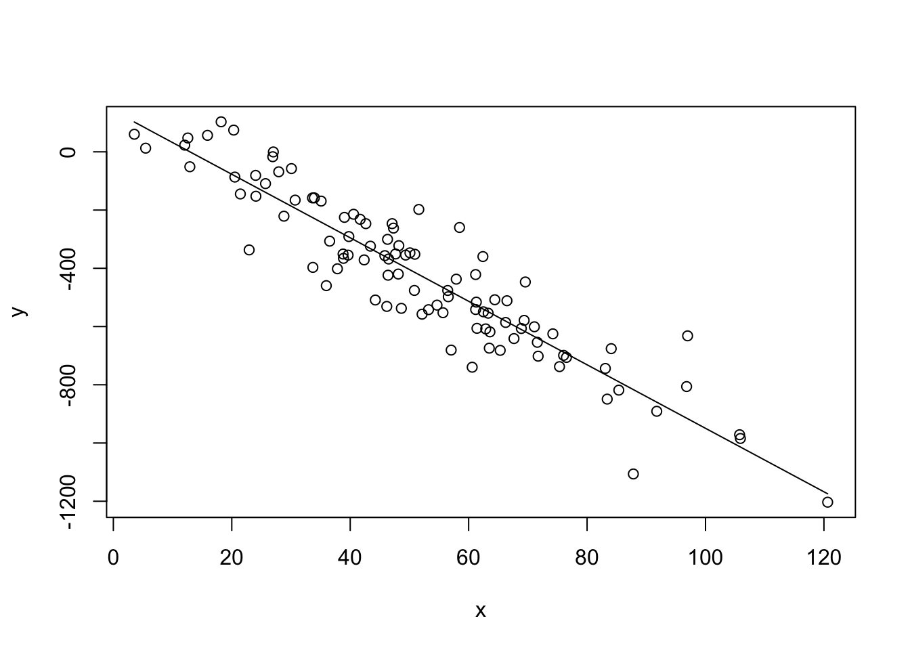
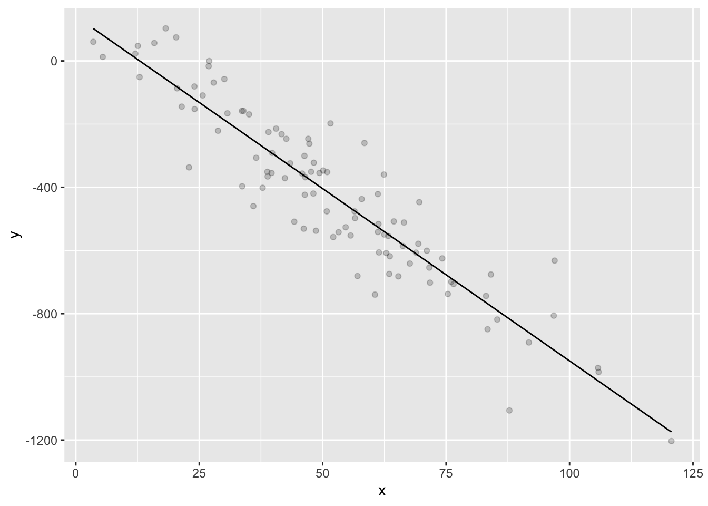
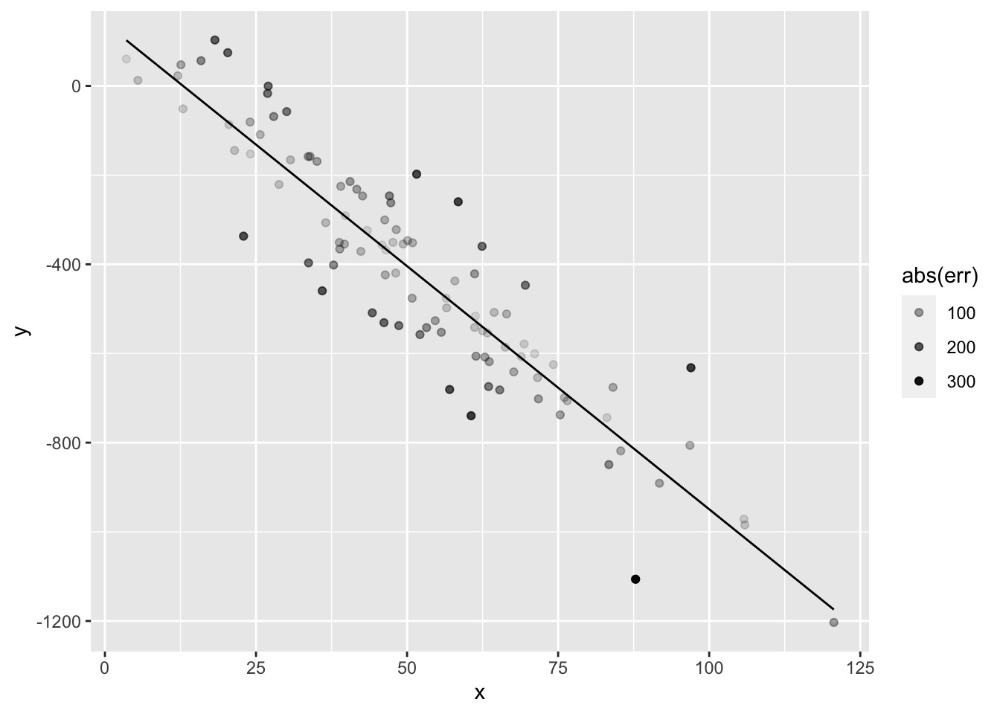

chp9-handout.pdf
Chapter 9: Multiple and Logistic Regression
# first generate x, explanatory variable
x <- rnorm(100, mean=50, sd=25)
# set population slope and intercept
B0 <- 100
B1 <- -10
# generate error/residuals
err <- rnorm(100, mean=0, sd=100)
# finally generate y, response variable
y <- B0 + B1*x + err
# now find the sample estimates
R <- cor(x,y)
b1 <- cor(x,y)*sd(y)/sd(x)
# or
b1 <- lm(y~x)$coefficients['x']
# solve for intercept given slope and mean(x), mean(y)
b0 <- -b1*mean(x)+mean(y)
# or
b0 <- lm(y~x)$coefficients['(Intercept)']
# predicted y values
yhat <- b0 + b1*x
# base R plot
plot(x,y)
lines(x,yhat)
# ggplot2 plot
library(ggplot2)
ggplot(data.frame(x=x,y=y,yhat=yhat)) + geom_point(aes(x=x,y=y), alpha = .2) + geom_line(aes(x=x,y=yhat))
ggplot(data.frame(x=x,y=y,yhat=yhat,err=err)) + geom_point(aes(x=x,y=y,alpha=abs(err))) + geom_line(aes(x=x,y=yhat))
ggplot(data.frame(x=x,y=y,yhat=yhat,err=err)) + geom_point(aes(x=x,y=y,alpha=abs(err))) + geom_line(aes(x=x,y=yhat)) + geom_segment(aes(x=x, y=y, xend=x, yend=yhat, alpha=abs(err) )) # examine SStot, SSreg, SSerr
SStot <- var(y)
SSreg <- var(yhat)
SSerr <- var(y-yhat)
SStot == SSreg + SSerr # not exact## [1] TRUEall.equal(SStot, SSreg + SSerr) # TRUE## [1] TRUE# R^2 equalities
all.equal(R^2, 1 - SSerr/SStot)## [1] TRUEall.equal(R^2, SSreg/SStot)## [1] TRUEall.equal(cor(x,y), cov(x,y)/sd(x)/sd(y))## [1] TRUErecall variance
LaTeX: $var(x) =_{i=1}{n}(x_i-{x})2 $ v a r ( x ) = 1 n − 1 ∑ i = 1 n ( x i − x ¯ ) 2
we can rewrite this using expectations (E[]):
LaTeX: var(x) = _{i=1}{n}(x_i-E[x])2 \ var(x) = E)^2] \ var(x) = E-E[x]x + E[x]^2 ] \ var(x) = E[ x^2] -E[x]E[x] -E[x]E[x] + E[x]^2 \ var(x) = E[ x^2] -E[x]^2 \
v a r ( x ) = 1 n − 1 ∑ i = 1 n ( x i − E [ x ] ) 2 v a r ( x ) = E [ ( x i − E [ x ] ) 2 ] v a r ( x ) = E [ x 2 − x E [ x ] − E [ x ] x + E [ x ] 2 ] v a r ( x ) = E [ x 2 ] − E [ x ] E [ x ] − E [ x ] E [ x ] + E [ x ] 2 v a r ( x ) = E [ x 2 ] − E [ x ] 2
var(x)## [1] 592.022sum(x^2 - mean(x)^2)/(length(x)-1)## [1] 592.022Covariance
LaTeX: cov(x,y) = _{i=1}^{n}(x_i-{x})(y_i-{y})
c o v ( x , y ) = 1 n − 1 ∑ i = 1 n ( x i − x ¯ ) ( y i − y ¯ )
we can rewrite this using expectations (E[]):
LaTeX: var(x) = _{i=1}^{n}(x_i-E[x])(y_i-E[y]) \ var(x) = E)(y_i-E[y])] \ var(x) = E-E[x]y + E[x]E[y] ] \ var(x) = E[ xy] -E[x]E[y] -E[x]E[y] + E[x]E[y] \ var(x) = E[ xy] -E[x]E[y] \
v a r ( x ) = 1 n − 1 ∑ i = 1 n ( x i − E [ x ] ) ( y i − E [ y ] ) v a r ( x ) = E [ ( x i − E [ x ] ) ( y i − E [ y ] ) ] v a r ( x ) = E [ x y − x E [ y ] − E [ x ] y + E [ x ] E [ y ] ] v a r ( x ) = E [ x y ] − E [ x ] E [ y ] − E [ x ] E [ y ] + E [ x ] E [ y ] v a r ( x ) = E [ x y ] − E [ x ] E [ y ]
cov(x,y)## [1] -6486.098sum(x*y - mean(x)*mean(y))/(length(x)-1)## [1] -6486.098# covariance and correlation as matrices
X <- matrix(cbind(x,y),ncol=2)
# covariance
cov(x,y)## [1] -6486.098cov(X)## [,1] [,2]
## [1,] 592.022 -6486.098
## [2,] -6486.098 81817.277var(X)## [,1] [,2]
## [1,] 592.022 -6486.098
## [2,] -6486.098 81817.277N <- dim(X)[1]
Xmean <- matrix(rep(colMeans(X),N),nrow=N, byrow=T)
Xc <- X - Xmean # a "centered" version of X
S <- t(Xc) %*% (Xc) /(N-1) # covariance via multiplying centered matrix w/ itself
S## [,1] [,2]
## [1,] 592.022 -6486.098
## [2,] -6486.098 81817.277# correlation
cor(x,y)## [1] -0.9319489cor(X)## [,1] [,2]
## [1,] 1.0000000 -0.9319489
## [2,] -0.9319489 1.0000000Xsd <- matrix(rep(sqrt(diag(S)),N),nrow=N, byrow=T) # the sd of each column of X repeated N times
Xs <- Xc/Xsd # a "scaled" and centered version of X
(t(Xs) %*% Xs) / (N-1)## [,1] [,2]
## [1,] 1.0000000 -0.9319489
## [2,] -0.9319489 1.0000000version control and projects * saving your workspace as various types of projects (project, package, shiny webapp, various R+cpp formats, and RMarkdown website) via File->New Project * loading experimental code libraries with devtools::install_github("r-lib/devtools") # instead of install.packages("devtools")
pairs plot http://www.sthda.com/english/wiki/scatter-plot-matrices-r-base-graphs https://www.r-bloggers.com/scatterplot-matrices-pair-plots-with-cdata-and-ggplot2/